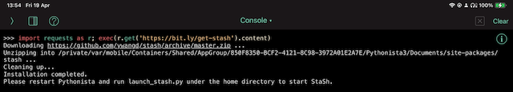
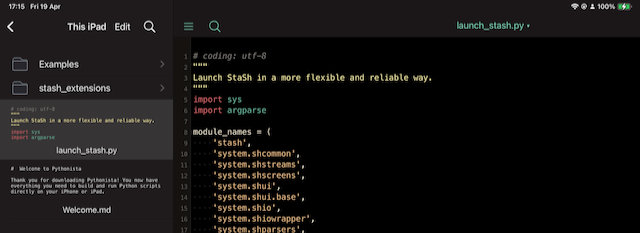
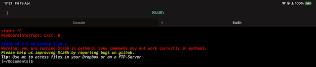

To run pip in pythonista we need to install stash first.
See stash page sfor latest details, at time of install I had to run this from the pythinista terminal:
import requests as r; exec(r.get('https://bit.ly/get-stash').content)

Then to start stash from a new (restart pyhtonista app) find and run the launch_stash.py script

there will then be a second terminal with the stash command line open up
